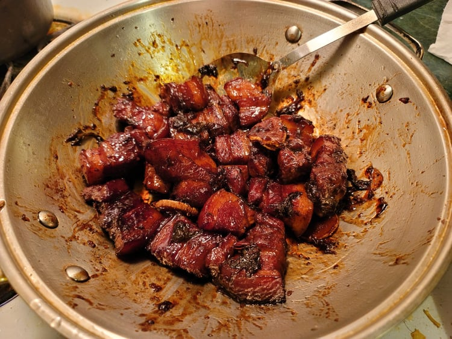

Hong Shao Rou (Red Braised Pork)

Ingredients:
Blanching:
- 2 lb Pork belly, cubed
- 2 Scallions, cut into 2 inch pieces
- 1/2 inch Ginger, sliced
Braising:
- 2 tbsp Canola oil
- 3 tbsp Sugar
- 1/3 cup Shaoxing wine
- 2 cups Blanching liquid
- 3 tbsp Light soy sauce
- 1 1/2 tbsp Dark soy sauce
- 1 inch Ginger, sliced
- 3 Scallions, cut into 2 inch pieces
- 2 whole Star anise
Instructions:
- In a medium-sized pot add the blanching ingredients and enough water to cover them completely. Bring to a boil over high heat. Once boiling, cook for 5 minutes, occasionally skimming off the scum.
- Remove the pot from heat. Strain the pork from the pot and rinse under cold water to stop the cooking. Reserve 2 cups of the blanching liquid.
- In a wok, add the oil and sugar. Heat over low heat until the sugar melts and becomes a light amber color.
- Once the sugar is a light amber color, add in the pork. Turn the heat up to medium-low and brown the pork, about 1-2 minutes.
- Add the Shaoxing wine and scrape and release any brown bits from the bottom of the pan with a spatula. Add the reserved blanching liquid, light soy sauce, dark soy sauce, ginger, green onions, and star anise.
- Bring the wok to a boil over high heat and then reduce to low and simmer. Partly cover the wok. Simmer for about 1 hour and 30 minutes. Stir 2 to 3 times throughout the simmering.
- If the sauce has not reduced to a glaze by this point, raise the heat to medium and stir-fry until the sauce has reduced as desired.
- Serve over rice with a scoop of the glaze.